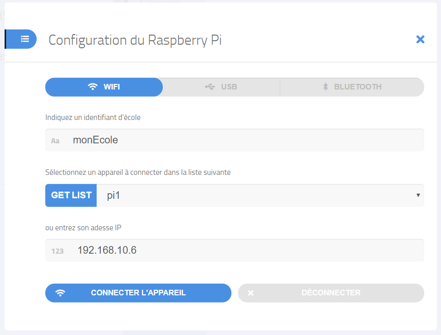

Dans l'environnement de programmation, vous disposez d'un bouton "Connect", pour établir la connexion entre l'environnement et le Raspberry Pi.
L'interface qui apparaît propose alors quatre possibilités que nous allons détailler :
La connexion par Wifi demande plusieurs étapes, et peut nécessiter une intervention d'un administrateur du réseau. C'est cependant celle que nous recommendons lorsqu'elle est possible, car cela fait du Raspberry Pi un véritable objet connecté, indépendant de l'ordinateur utilisé pour le programmer.
Commencez par suivre le tutoriel de configuration si vous ne l'avez pas déjà fait, pour connecter votre Raspberry Pi à votre réseau Wifi.
Sélectionnez l'onglet Wifi dans la fenêtre de gestion de la connexion.
Dans le premier champ de saisie, entrez le nom choisi pour votre établissement.
Cliquez alors sur "GET LIST", pour charger la liste des noms de Raspberry Pi connus pour cet établissement.
Sélectionnez le nom de votre Raspberry. Son adresse IP apparaît alors.
Cliquez alors sur "Connecter l'appareil". Après quelques instants, le bouton "Connecter" de l'interface se réduit et un bouton "Installer" apparaît.,

Cela signifie que le Raspberry Pi est bien connecté, et que vous pouvez interagir avec.
Cette option est la manière la plus simple de connecter le Raspberry à un PC, et devrait fonctionner sur tout ordinateur disposant d’un système d’exploitation relativement récent. En particulier, cela devrait fonctionner sous windows à partir de Windows Vista (sorti en 2007).
Elle a cependant l'inconvénient que le Raspberry Pi n'a alors pas accès à internet.
Branchez simplement le Raspberry Pi sur le port USB d’un PC à l’aide d’un câble USB vers micro-USB data (attention, les câbles très bon marché ne permettent parfois que l’alimentation, et non la transmission des données).
Sélectionnez l'onglet USB dans la fenêtre de gestion de la connexion de l'environnement de programmation.
QuickPi détecte le Raspberry Pi, et le bouton "Connecter l'appareil" devient bleu.
Cliquez alors sur "Connecter l'appareil". Après quelques instants, le bouton "Connecter" de l'interface se réduit et un bouton "Installer" apparaît.,
Cela signifie que le Raspberry Pi est bien connecté, et que vous pouvez interagir avec.
Il est possible de connecter son Raspberry en Bluetooth, en particulier pour le programmer depuis une tablette.
La procédure n'est pas encore documentée. Cela fonctionne assez directement sur iPad. Sur Android, pour le moment la connexion fonctionne mais bloque l'accès à internet de la tablette. Sur PC, la procédure est un peu plus compliquée, mais sera prochainement documentée.
Si vous chargez l'environnement de programmation directement depuis un Raspberry Pi, vous pouvez utiliser ce dernier onglet pour établir la connexion.